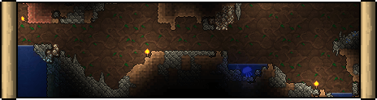

The Underground is the first layer below the surface. It fills the area between the Surface and Cavern layers, beginning at a depth of 0ft and extending downward.
Its distinctive background can recognize the Underground, which no longer contains naturally-placed Dirt Walls like surface terrain, but instead displays a unique, often brown, backdrop with no naturally-placed walls. Players cannot remove this backdrop using a Hammer, nor can they place blocks in midair, as no wall generally exists here (though players can place their walls, just as they can above surface terrain). Natural Underground blocks are generally similar to those in the surface, with Dirt and Stone making up the majority of the biome. Clay, Silt, and lower-tier gems and ores can also be found in small pockets here. Some miscellaneous treasures can be found here, including Gem Trees (which drop Gemcorns, Stone, and occasionally their respective gems when chopped down); dye plants including Green Mushrooms, Orange Bloodroot, and Teal Mushrooms; and the Blinkroot herb.
The Underground is home to more aggressive enemies than the surface. More powerful Red and Yellow Slimes will spawn down here (alongside the rare Pinky), while Blue Jellyfish spawn in the water and Giant Worms are found burrowing through the ground. In Hardmode, more powerful counterparts of these enemies will spawn, with the Digger, Green Jellyfish, and Toxic Sludge mostly replacing Giant Worms, Blue Jellyfish, and regular slimes respectively.
Traps will also begin appearing in this layer. Underground Cabins, though not as common as in the Caverns, will frequently appear with handy loot such as the Cloud in a Bottle, Hermes Boots, and Magic Mirror.
In general, not much time is spent here, but instead in the Cavern layer, which holds many more enemies, spawns treasures, and unique drops. Therefore, it is a wise idea almost entirely to ignore this layer in favor of exploring the Caverns.
Occasionally, the Mouse and Snail critters will be found scurrying around. Fairies have a rare chance of randomly showing up and guiding the player to a random treasure (such as chests, Life Crystals, or ores) nearby.
True underground versions of biomes, such as the Ice biome or Underground Corruption, do not begin in this layer, but in the Cavern layer (except for the Underground Desert, which begins in Surface terrain and extends through the Underground and a portion of the Cavern). In Hardmode, some blocks in the Underground can be converted into Hallow, Corruption, or Crimson.